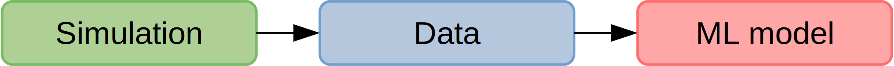
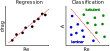

Creating data-driven CFD workflows using OpenFOAM and PyTorch
Andre Weiner1, Chiara Pesci2, Tomislav
Marić3, Richard Semaan1, Dieter
Bothe3
1TU Braunschweig ISM, 2 ESI GmbH,
3 TU Darmstadt MMA
Outline
- Data-driven workflows
- PyTorch
- Supervised learning
- Unsupervised learning
- Reinforcement learning
What is data?
primary data: scalar/vector fields, boundary fields, integral values
# log.rhoPimpleFoam Courant Number mean: 0.020065182 max: 0.77497916 deltaT = 6.4813615e-07 Time = 1.22219e-06 PIMPLE: iteration 1 diagonal: Solving for rho, Initial residual = 0, Final residual = 0, No Iterations 0 DILUPBiCGStab: Solving for Ux, Initial residual = 0.0034181127, Final residual = 6.0056507e-05, No Iterations 1 DILUPBiCGStab: Solving for Uy, Initial residual = 0.0052004883, Final residual = 0.00012352706, No Iterations 1 DILUPBiCGStab: Solving for e, Initial residual = 0.06200185, Final residual = 0.0014223046, No Iterations 1 limitTemperature limitT Lower limited 0 (0%) of cells limitTemperature limitT Upper limited 0 (0%) of cells limitTemperature limitT Unlimited Tmax 329.54945 Unlimited Tmin 280.90821Checking geometry... ... Mesh has 2 solution (non-empty) directions (1 1 0) All edges aligned with or perpendicular to non-empty directions. Boundary openness (1.4469362e-19 3.3639901e-21 -2.058499e-13) OK. Max cell openness = 2.4668495e-16 OK. Max aspect ratio = 3.0216602 OK. Minimum face area = 7.0705331e-08. Maximum face area = 0.00033983685. Face area magnitudes OK. Min volume = 1.2975842e-10. Max volume = 6.2366859e-07. Total volume = 0.0017254212. Cell volumes OK. Mesh non-orthogonality Max: 60.489216 average: 4.0292071 Non-orthogonality check OK. Face pyramids OK. Max skewness = 1.1453509 OK. Coupled point location match (average 0) OK.
secondary data: log files, input dictionaries, mesh quality metrics, ...
What is a data-driven workflow?
Example: creating a surrogate or reduced-order model based on numerical data.
Example: creating a space and time dependent boundary condition based on numerical or experimental data.

Example: creating closure models based on numerical data.
Example: active flow control or shape optimization.
ML/deep learning frameworks
criteria: workflow, algorithms, data size, programming language, platform, ...
Why PyTorch?
- easy to use and set up
- Python/C++/Java frontend
- easy exchange and optimization of models thanks to TorchScript
- Python and C++ APIs closely aligned
Getting started
- Github: Docker + OpenFOAM + PyTorch
- accompanying blog post
- article about torch::Sequential by Tomislav Marić
- Github: ML applied to CFD
- Github: boundary layer modeling
- PyTorch C++ examples
- Python and C++ APIs
Supervised learning
Creating a mapping from features to labels based on examples.
Example: mapping the velocity from two-phase to single-phase simulations.
Problem: obtain reference data for local and global mass transfer at high Schmidt ($Sc$) and Péclet ($Pe$) numbers.
Extension to dynamically deforming bubbles together with Irian Hierck, Claire Claassen, and Maike Baltussen @ TU Eindhoven
- Data:
- rise velocity
- interface position
- interface velocity
- PyTorch models:
- inlet velocity $\mathbf{u}_{in} = \mathbf{u}_{in}(\tilde{t})$
- bubble radius $r_{b} = r_{b}(\tilde{t}, \vartheta)$
- surface velocity $\mathbf{u}_{\Sigma} = \mathbf{u}_{\Sigma}(\tilde{t}, \vartheta)$
- OpenFOAM:
- boundary conditions for velocity and mesh motion
Transient concentration field for different Reynolds numbers $Re$ and constant Schmidt number $Sc=100$.
Mesh motion and zoom view of concentration boundary layer for $Re=569$ and $Sc=100$.
Global Sherwood number $Sh$ for two different mesh resolutions (3250 and 6500 cells/diameter). ~7h, serial, 2.4 GHz
Unsupervised learning


Finding patterns in unlabeled data.
Example: dynamic mode decomposition (DMD) of the flow past a cylinder.
Problem: find a reduced representation based on coherent flow structures. Flow past a cylinder; $Re=100$.
Classical DMD
- data matrices: $$\mathbf{X} = \left[ \mathbf{x}_1, \mathbf{x}_2, \dots, \mathbf{x}_{N-1} \right]^T\text{, }\mathbf{X}^\prime = \left[ \mathbf{x}_2, \mathbf{x}_3, \dots, \mathbf{x}_{N} \right]^T$$
- singular value decomposition (SVD): $$\mathbf{X} = \mathbf{U}\mathbf{\Sigma} \mathbf{V}^T$$
- rank $r$ approximation of linear operator: $$ \mathbf{A}=\mathbf{X}^\prime \mathbf{X}^T \text{, } \tilde{\mathbf{A}} = \mathbf{U}^T_r \mathbf{A}\mathbf{U}_r $$
- Eigen-decomposition: $$\tilde{\mathbf{A}}\mathbf{W} = \mathbf{W}\mathbf{\Lambda}\text{, } \Phi = \mathbf{X}^\prime \mathbf{V} \mathbf{\Sigma}^{-1}\mathbf{W}$$
Learn more in this video.
DMD in OpenFOAM
- implemented as function object STDMD (streaming DMD)
- main output:
- temporal behavior: STDMD.dat in postProcessing
- spatial modes: modeReal1U in time folders
-
What is this useful for?
- reconstruct fields at any time $t$
- find and analyze coherent structures
- build reduced-order models (ROMs)
flowtorch
flowTorch is a unified framework for
- data loading
- pre-processing
- modal decomposition
- reduced-order models
flowTorch in a nutshell
- uses PyTorch as backend (pytorch.org)
- parallel computations on CPUs/GPUs
- mixed precision single/double
- open-source release planned (MIT)
- implemented as a Python library
(Deep) Reinforcement learning

Create an intelligent agent that learns to map states to actions such that cumulative rewards are maximized.
Example: active flow control for drag reduction.

Source: Jean Rabault et al., check out the code! Follow our progress on Github; together with Darshan Thummar.
Example: accelerating OpenFOAM simulations.
Problem: setting inner and outer iterations in $p$-$U$ coupling; linear solver settings.
// system/fvSolution
p
{
solver GAMG;
smoother GaussSeidel;
tolerance 1e-6;
relTol 0.01;
}
...
PIMPLE
{
nOuterCorrectors 50;
nCorrectors 1;
nNonOrthogonalCorrectors 1;
...
}